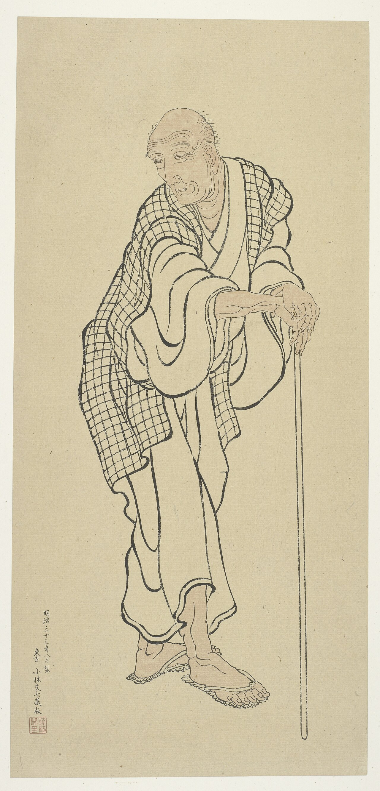
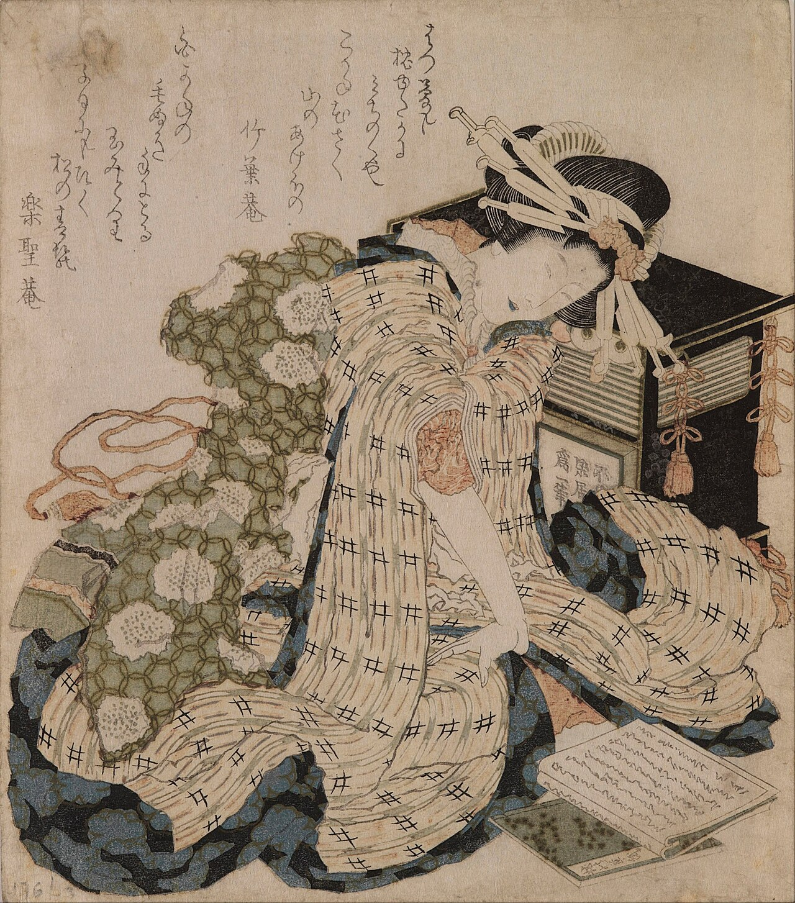
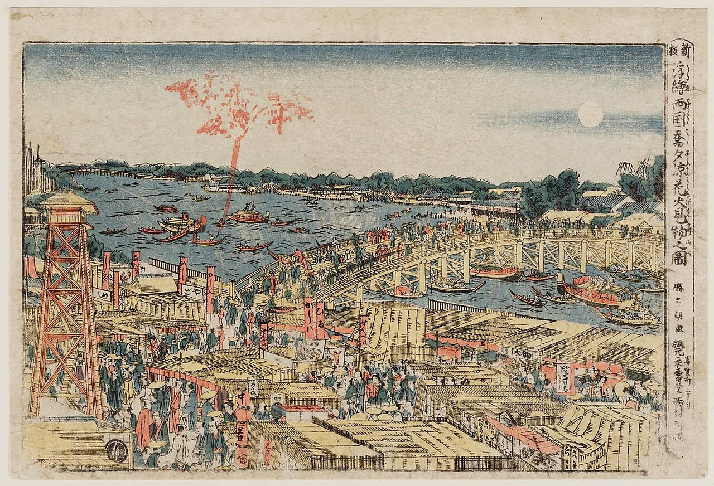
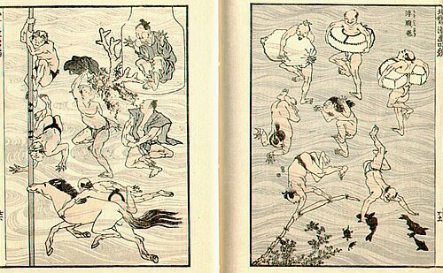
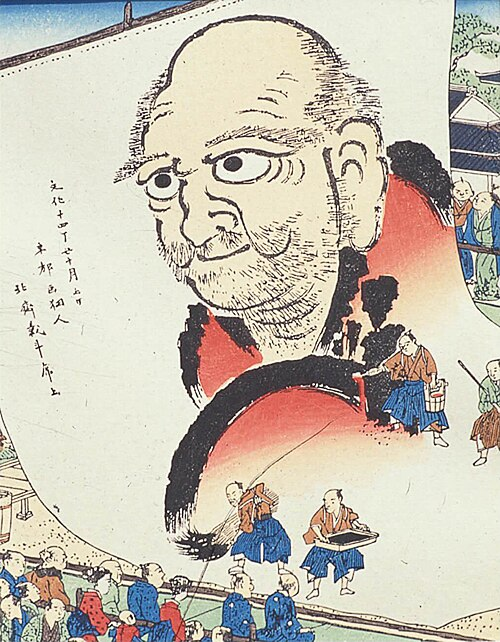
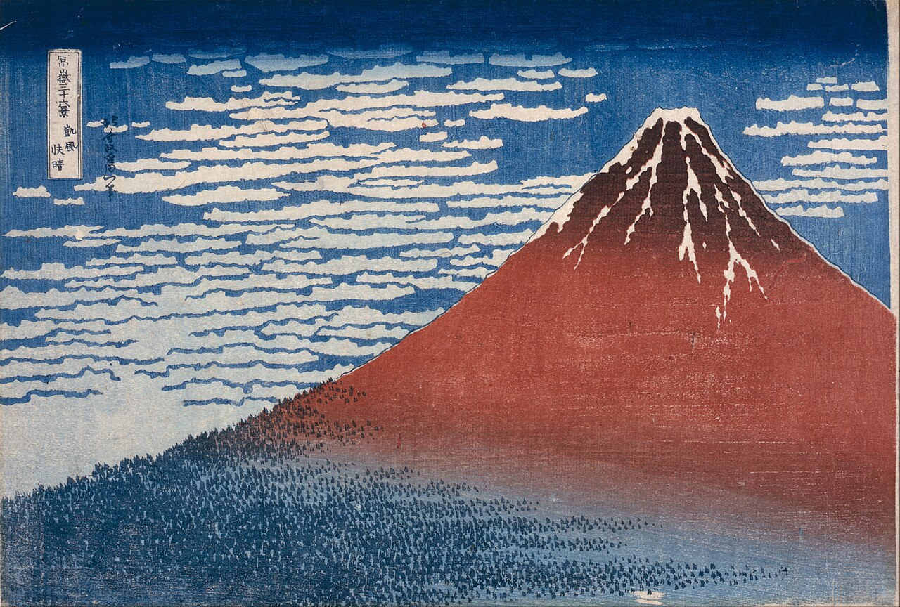
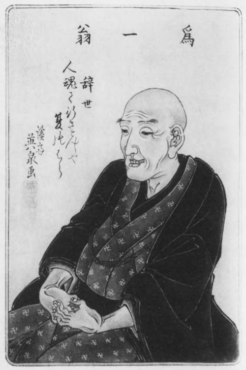
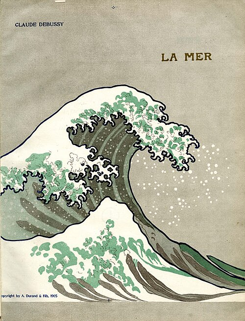

Colophon to One Hundred Views of Mount Fuji, 1834 · p18
of all I drew by my seventieth year
He was seventy-three when he wrote that, and he had fifteen years left. The sentence keeps going, and it keeps counting: eighty-six, ninety, a hundred, a hundred and ten. Eight attainments, eight ages. Three of them fall after the end of his life.

The graph is his sentence and nothing else — eight attainments, eight ages. Three of them fall after the end of his life.
Ages derived here, not stated there: a year in the article, less a birth of c. 1760.
“Hokusai is not just one artist among others in the Floating World. He is an island, a continent, a whole world in himself”
Edgar Degas, who collected his woodcuts · p25. The last mark on this axis, the British Museum in 2017, falls at what would have been his two hundred and fifty-seventh year: 1849 + 168 = 2017, less a birth of c. 1760.
Japanese artist (1760–1849) · English Wikipedia, revision 1367785328. Titles link back to the plot.
Katsushika Hokusai (葛飾 北斎; c. 31 October 1760 – 10 May 1849) was a Japanese ukiyo-e artist of the Edo period, active as a painter and printmaker. His woodblock print series Thirty-Six Views of Mount Fuji includes the iconic print The Great Wave off Kanagawa. Hokusai was instrumental in developing ukiyo-e from a style of portraiture largely focused on courtesans and actors into a much broader style of art that focused on landscapes, plants, and animals. His works had a significant influence on Vincent van Gogh and Claude Monet during the wave of Japonisme that spread across Europe in the late 19th century.
Hokusai created the monumental Thirty-Six Views of Mount Fuji as a response to a domestic travel boom in Japan and as part of a personal interest in Mount Fuji. It was this series, specifically, The Great Wave off Kanagawa and Fine Wind, Clear Morning, that secured his fame both in Japan and overseas.
Hokusai was best known for his woodblock ukiyo-e prints, but he worked in a variety of mediums including painting and book illustration. Starting as a young child, he continued working and improving his style until his death, aged 88. In a long and successful career, Hokusai produced over 30,000 paintings, sketches, woodblock prints, and images for picture books. Innovative in his compositions and exceptional in his drawing technique, Hokusai is considered one of the greatest masters in the history of art.
Hokusai's date of birth is unclear, but is often stated as the 23rd day of the 9th month of the 10th year of the Hōreki era (in the old calendar, or 31 October 1760) to an artisan family, in the Katsushika[ja] district of Edo, the capital of the ruling Tokugawa shogunate (currently Katsushika-ku, Tokyo). At birth, his childhood name was Tokitarō (時太郎). It is believed his father was Nakajima Ise, a mirror-maker for the shōgun. His father never made Hokusai an heir, so it is possible that his mother was a concubine. Hokusai began painting around the age of six, perhaps learning from his father, whose work included the painting of designs around mirrors.
Hokusai was known by at least thirty names during his lifetime. While the use of multiple names was a common practice of Japanese artists of the time, his number of pseudonyms exceeds that of any other major Japanese artist. His name changes are so frequent, and so often related to changes in his artistic production and style, that they are used for breaking his life up into periods.

At the age of 12, his father sent him to work in a bookshop and lending library, a popular institution in Japanese cities, where reading books made from woodcut blocks was a popular entertainment of the middle and upper classes. At 14, he worked as an apprentice to a woodcarver, until the age of 18, when he entered the studio of Katsukawa Shunshō. Shunshō was an artist of ukiyo-e, a style of woodblock prints and paintings that Hokusai would master, and head of the so-called Katsukawa school. Ukiyo-e, as practised by artists like Shunshō, focused on images of the courtesans (bijin-ga) and kabuki actors (yakusha-e) who were popular in Japan's cities at the time.

After a year, Hokusai's name changed for the first time, when he was dubbed Shunrō by his master. It was under this name that he published his first prints, a series of pictures of kabuki actors published in 1779. During the decade he worked in Shunshō's studio, Hokusai was married to his first wife, about whom very little is known except that she died in the early 1790s. He married again in 1797, although this second wife also died after a short time. He fathered two sons and three daughters with these two wives, and his youngest daughter Ei, also known as Ōi, eventually became an artist and his assistant. Fireworks in the Cool of Evening at Ryogoku Bridge in Edo (c. 1788–89) dates from this period of Hokusai's life.
Upon the death of Shunshō in 1793, Hokusai began exploring other styles of art, including European styles he was exposed to through French and Dutch copper engravings he was able to acquire. He was soon expelled from the Katsukawa school by Shunkō, the chief disciple of Shunshō, possibly due to his studies at the rival Kanō school. This event was, in his own words, inspirational: "What really motivated the development of my artistic style was the embarrassment I suffered at Shunkō's hands".
Hokusai also changed the subjects of his works, moving away from the images of courtesans and actors that were the traditional subjects of ukiyo-e. Instead, his work became focused on landscapes and images of the daily life of Japanese people from a variety of social levels. This change of subject was a breakthrough in ukiyo-e and in Hokusai's career.
The next period saw Hokusai's association with the Tawaraya School and the adoption of the name "Tawaraya Sōri". He produced many privately commissioned prints for special occasions (surimono), and illustrations for books of humorous poems (kyōka ehon) during this time. In 1798, Hokusai passed his name on to a pupil and set out as an independent artist, free from ties to a school for the first time, adopting the name Hokusai Tomisa.

By 1800, Hokusai was further developing his use of ukiyo-e for purposes other than portraiture. He had also adopted the name he would most widely be known by, Katsushika Hokusai, the former name referring to the part of Edo where he was born, the latter meaning 'north studio', in honour of the North Star, symbol of a deity important in his religion of Nichiren Buddhism. That year, he published two collections of landscapes, Famous Sights of the Eastern Capital and Eight Views of Edo (modern Tokyo). He also began to attract students of his own, eventually teaching 50 pupils over the course of his life.
He became increasingly famous over the next decade, both due to his artwork and his talent for self-promotion. During an Edo festival in 1804, he created an enormous portrait of the Buddhist prelate Daruma, said to be 200 square meters, using a broom and buckets full of ink. Another story places him in the court of the shōgun Tokugawa Ienari, invited there to compete with another artist who practised more traditional brushstroke painting. Hokusai painted a blue curve on paper, then chased a chicken whose feet had been dipped in red paint across the image. He described the painting to the shōgun as a landscape showing the Tatsuta River with red maple leaves floating in it, winning the competition.

Between 1804 and 1815, Hokusai collaborated with the popular novelist Takizawa Bakin on a series of illustrated books. Especially popular was the fantasy novel Chinsetsu Yumiharizuki (Strange Tales of the Crescent Moon, 1807–1811) with Minamoto no Tametomo as the main character, and Hokusai gained fame with his creative and powerful illustrations, but the collaboration ended after thirteen works. There are various theories as to why they dissolved their cooperation, such as discordant personalities and conflicting opinions on how to draw illustrations. Hokusai also created several albums of erotic art (shunga). His most famous image in this genre is The Dream of the Fisherman's Wife, which depicts a young woman entwined sexually with a pair of octopuses, from Kinoe no Komatsu, a three-volume book of shunga from 1814.
Hokusai paid close attention to the production of his work. In letters during his involvement with Toshisen Ehon, a Japanese edition of an anthology of Chinese poetry, Hokusai wrote to the publisher that the blockcutter Egawa Tomekichi, with whom Hokusai had previously worked and whom he respected, had strayed from Hokusai's style in the cutting of certain heads. He also wrote directly to another blockcutter involved in the project, Sugita Kinsuke, stating that he disliked the Utagawa school style in which Kinsuke had cut the figure's eyes and noses and that amendments were needed for the final prints to be true to his style. In his letter, Hokusai included examples of both his style of illustrating eyes and noses and the Utagawa school style.
In 1811, at the age of 51, Hokusai changed his name to Taito and entered the period in which he created the Hokusai Manga and various etehon, or art manuals. These manuals beginning in 1812 with Quick Lessons in Simplified Drawing, were intended as a convenient way to make money and attract more students. The first volume of Manga (meaning random drawings) was published in 1814 and was an immediate success. By 1820, he had produced twelve volumes (with three more published posthumously) which include thousands of drawings of objects, plants, animals, religious figures, and everyday people, often with humorous overtones.

On 5 October 1817, he painted the Great Daruma outside the Hongan-ji Nagoya Betsuin in Nagoya. This portrait in ink on paper measured 18 × 10.8 metres, and the event drew huge crowds. The feat was recounted in a popular song and he received the name "Darusen" or "Daruma Master" Although the original was destroyed in 1945, Hokusai's promotional handbills from that time survived and are preserved at the Nagoya City Museum.
In 1820, Hokusai changed his name yet again, this time to Iitsu, a change which marked the start of a period in which he secured fame as an artist throughout Japan. His most celebrated work, Thirty-six Views of Mount Fuji, including the famous The Great Wave off Kanagawa and Red Fuji was produced in the early 1830s. The results of Hokusai's perspectival studies in Manga can be seen here in The Great Wave where he uses what would have been seen as a western perspective to represent depth and volume. It proved so popular that ten more prints were later added to the series. Among the other popular series of prints he made during this time are A Tour of the Waterfalls of the Provinces, Oceans of Wisdom and Unusual Views of Celebrated Bridges in the Provinces. He also began producing a number of detailed individual images of flowers and birds (kachō-e), including the extraordinarily detailed Poppies and Flock of Chickens.
The next period, beginning in 1834, saw Hokusai working under the name "Gakyō Rōjin Manji" (画狂老人卍; "The Old Man Mad About Art"). It was at this time that he produced One Hundred Views of Mount Fuji, another significant series, generally considered "the masterpiece among his landscape picture books".
In the colophon to this work, Hokusai writes:
From the age of six, I had a passion for copying the form of things and since the age of fifty I have published many drawings, yet of all I drew by my seventieth year there is nothing worth taking into account. At seventy-three years I partly understood the structure of animals, birds, insects and fishes, and the life of grasses and plants. And so, at eighty-six I shall progress further; at ninety I shall even further penetrate their secret meaning, and by one hundred I shall perhaps truly have reached the level of the marvellous and divine. When I am one hundred and ten, each dot, each line will possess a life of its own. Colophon to One Hundred Views of Mount Fuji, 1834 · p18.

A True Mirror of Chinese and Japanese Poetry (Shika shashin kyo), produced in about 1833 to 1834, was printed in extra-long vertical formats resembling the form of Chinese hand scrolls. Prints in this series include poems by Chinese and Japanese poets combined with scenes in those countries, and scenes from Noh plays (a form of dance theater predating kabuki). Ten designs in this series survive. Hokusai's Great Picture Book of Everything, now in the British Museum, a set of drawings from 1820s through 1840s, offers unique insights into his practices since the book was never made, so the drawings never destroyed as typically happened in the woodblock making process. These images focus on Buddhist India, ancient China and the natural world.
Hokusai's final print series, produced around 1835 to 1836, was called One Hundred Poems Explained by a Nurse (Hyakunin isshu tuba ga etoki). The series was never published in full, perhaps due to financial hardships faced by Hokusai's publishers during Japan's economic downturn in the mid-1830's. These prints featured scenes with the poems inscribed in a square. Each print also contains the series title listed in its own vertical rectangle.
In 1839, a fire destroyed Hokusai's studio and much of his work. By this time, his career was beginning to fade as younger artists such as Andō Hiroshige became increasingly popular. At the age of 83, Hokusai traveled to Obuse in Shinano Province (now Nagano Prefecture) at the invitation of a wealthy farmer, Takai Kozan, where he stayed for several years. During his time in Obuse, he created several masterpieces, including the Masculine Wave and the Feminine Wave. Between 1842 and 1843, in what he described as "daily exorcisms" (nisshin joma), Hokusai painted Chinese lions (shishi) every morning in ink on paper as a talisman against misfortune. Hokusai continued working almost until the end, painting The Dragon of Smoke Escaping from Mt Fuji and Tiger in the Snow in early 1849.
Constantly seeking to produce better work, he apparently exclaimed on his deathbed, "If only Heaven will give me just another ten years ... Just another five more years, then I could become a real painter". He died on 10 May 1849 and was buried at the Seikyō-ji (誓教寺) in Tokyo (Taito Ward). A haiku he composed shortly before his death reads: "Though as a ghost, I shall lightly tread, the summer fields".
Hokusai had achievements in various fields as an artist. He made designs for book illustrations and woodblock prints, sketches, and paintings for over 70 years. Hokusai was an early experimenter with western linear perspective among Japanese artists. Hokusai himself was influenced by Sesshū Tōyō and other styles of Chinese painting. His influence stretches across the globe to his western contemporaries in nineteenth-century Europe with Japonism, which started with a craze for collecting Japanese art, particularly ukiyo-e. Some of the first samples were to be seen in Paris, when in about 1856, the French printmaker, designer and colleague of many Impressionist artists such as Édouard Manet, Félix Bracquemond first came across a copy of a Hokusai sketchbook at the workshop of August Dalatre, his printer.
With the sketchbook as his influence Bracquemond designed the "Rousseau Service", an elegant set of dinnerware, on behalf of Francois-Eugene Rousseau, the owner of a glass and ceramics shop. Exhibited at the Universal Exposition in Paris in 1867, the Rousseau Service was a success both critically and commercially and was reissued in several editions over the years. The Rousseau Service featured images of birds and fish copied from the Japanese book illustrations and placed asymmetrically against a white background for a look that would have been very modern at that time.
Hokusai also influenced the Impressionism movement, with themes echoing his work appearing in the work of Claude Monet and Pierre-Auguste Renoir, as well as Art Nouveau, or Jugendstil in Germany. His woodcuts were collected by many European artists, including Degas, Gauguin, Klimt, Franz Marc, August Macke, Édouard Manet, and van Gogh. Degas said of him, "Hokusai is not just one artist among others in the Floating World. He is an island, a continent, a whole world in himself". Hermann Obrist's whiplash motif, or Peitschenhieb, which came to exemplify the new movement, is visibly influenced by Hokusai's work.[original research?]

The French composer Claude Debussy's tone poem La Mer, which debuted in 1905, is believed to have been inspired by Hokusai's print The Great Wave. The composer had an impression of it hanging in his living room and specifically requested that it be used on the cover of the published score, which was widely distributed, and the music itself incorporated Japanese-inflected harmonies.
Even after his death, exhibitions of his artworks continue to grow. In 2005, Tokyo National Museum held a Hokusai exhibition which had the largest number of visitors of any exhibit there that year. Several paintings from the Tokyo exhibition were also exhibited in the United Kingdom. The British Museum held the first exhibition of Hokusai's later year artworks including 'The Great Wave' in 2017.
Hokusai inspired the Hugo Award–winning short story by science fiction author Roger Zelazny, "24 Views of Mt. Fuji, by Hokusai", in which the protagonist tours the area surrounding Mount Fuji, stopping at locations painted by Hokusai. A 2011 book on mindfulness closes with the poem "Hokusai Says" by Roger Keyes, preceded with the explanation that "ometimes poetry captures the soul of an idea better than anything else".
In the 1985 Encyclopædia Britannica, Richard Lane characterizes Hokusai as "since the later 19th century [having] impressed Western artists, critics and art lovers alike, more, possibly, than any other single Asian artist".
'Store Selling Picture Books and Ukiyo-e' by Hokusai shows how ukiyo-e during the time was actually sold; it shows how these prints were sold at local shops, and ordinary people could buy ukiyo-e. Unusually in this image, Hokusai used a hand-colored approach instead of using several separated woodblocks.
His youngest daughter Ei has her own manga and film called Miss Hokusai.
A biographical film about the painter was released in Japan on 28 May 2021. It was premiered at the 33rd Tokyo International Film Festival.
p4: “His name changes are so frequent, and so often related to changes in his artistic production and style, that they are used for breaking his life up into periods.”